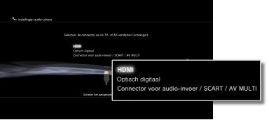
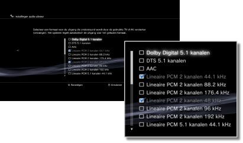
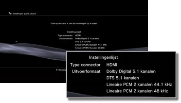

Instellingen > Geluidsinstellingen > Instellingen audio-uitvoer
Instellingen audio-uitvoer
De instellingen van de audio-uitvoer van het systeem wijzigen. Deze instellingen worden vooral gebruikt wanneer het systeem op audio-apparaten is aangesloten die digitale audio-uitvoer ondersteunen, zoals AV-versterkers (ontvangers) voor home entertainment-systemen.
1. |
Controleer de formaten die door uw audio-apparaat worden ondersteund. |
||||||||||||
|---|---|---|---|---|---|---|---|---|---|---|---|---|---|
2. |
Selecteer |
||||||||||||
3. |
Selecteer [Instellingen audio-uitvoer]. |
||||||||||||
4. |
Selecteer de invoeraansluiting op het audio-apparaat. Kanaalnummers en audioformaten die worden ondersteund hangen af van de gebruikte aansluiting. 
|
||||||||||||
5. |
Selecteer audio-uitvoerformaten.  |
||||||||||||
6. |
Controleer uw instellingen.  |
||||||||||||
7. |
Sla uw instellingen op. |
 -toets te drukken.
-toets te drukken.Opmerkingen
- Audio ingesteld op [Lineaire PCM 2 kanalen] wordt standaard uitgevoerd via alle uitgangen. Als u de instellingen voor audio-uitvoer wijzigt, wordt audio alleen uitgevoerd via de ingestelde connectoren
- Als u de instellingen van de audio-uitvoer wijzigt, is het systeem niet meer in staat om geluid uit te voeren via meerdere uitgangen tegelijk. Als uw systeem bijvoorbeeld is aangesloten op een tv met een HDMI-kabel en op een audio-apparaat met een digitale optische kabel, en u kiest de optie [Optisch digitaal] onder [Instellingen audio-uitvoer], wordt geen geluid meer uitgevoerd via de tv. Om het geluid van de tv uit te voeren, zet u de instelling op [HDMI] of selecteert u
 (Instellingen) >
(Instellingen) >  (Geluidsinstellingen) > [Meervoudige audio-uitvoer] en zet u deze optie op [Aan].
(Geluidsinstellingen) > [Meervoudige audio-uitvoer] en zet u deze optie op [Aan]. - Als u [Lineaire PCM 2 kanalen 88,2 kHz] of [Lineaire PCM 2 kanalen 176,4 kHz] selecteert in stap 5, kan het geluid haperen of niet worden uitgevoerd met bepaalde audioapparaten.
- Bij gebruik van een HDMI-kabel wordt alleen [Lineaire PCM 2 kanalen]-audio uitgevoerd van PlayStation®2- en PlayStation®-software. Om Dolby Digital of DTS®-audio uit te voeren, moet u het PS3™-systeem verbinden met het audioapparaat via een digitale optische kabel en [Optisch digitaal] instellen onder [Instellingen audio-uitvoer].
- Als een apparaat dat niet compatibel is met de HDCP（High-bandwidth Digital Content Protection）-standaard wordt aangesloten op het systeem met een HDMI-kabel, kan geen video en/of audio worden uitgevoerd via het systeem.
- Als Dolby TrueHD is geselecteerd als audio-uitvoerformaat, wordt het geluid uitgevoerd in Dolby Digital wanneer Blu-ray 3D™-content afgespeeld wordt.
Let op
- Sommige PlayStation®2- of PlayStation®-softwaretitels kunnen anders werken op het PS3™-systeem dan op PlayStation®2- of PlayStation®-systemen of werken soms niet goed op het PS3™-systeem.
- Discs in PlayStation®2-formaat kunnen niet afgespeeld worden op sommige PS3™-systemen. Voor meer informatie kunt u [Types afspeelbare discs] raadplegen, de SIE-website voor uw regio bezoeken of de documentatie bekijken die met uw PS3™-systeem meegeleverd werd.